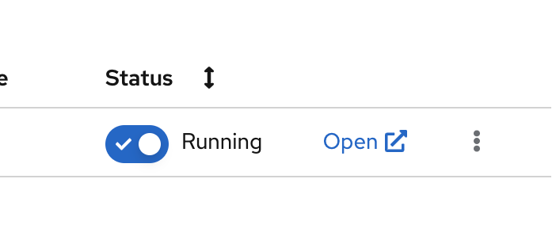

Lab: Explore Data with Pandas
Steps
-
Open the RHODS dashboard.
-
In a web browser, navigate to the Web Console of your Red Hat OpenShift cluster, and log in.
-
Click the applications menu in the top navigation bar of OpenShift, then click Red Hat OpenShift Data Science.

-
If prompted, log in with your Red Hat OpenShift credentials.
-
-
Configure the workbench of your data science project.
A RHODS workbench is a containerized application that includes commonly used data science tools and libraries, such as JupyterLab, Tensorflow, and PyTorch. RHODS provides you with a collection of workbench container images, each one preconfigured and tailored to a specific data science use case.
-
Click Data Science Projects in the left sidebar.

-
Create a data science project. Click Create data science project. In the modal window that opens, enter a name and click Create.
If you are using Red Hat OpenShift from the developer sandbox, then a project is already created for you.
-
Click the newly created project.
-
In the project page, click Create workbench and complete the form with the following values.
Name
data-loadNotebook image - Image selection
Standard Data ScienceNotebook image - Version selection
Select the recommended option
Do not modify the default values of the rest of the fields.
-
Click Create workbench. RHODS creates the workbench and the associated persistent storage.
-
-
Configure a data connection.
A data connection provides the workbench with access to a storage layer. In this demo, you use the storage layer to save the trained model.
Additionally, a data connection also configures RHODS Model Serving with the required settings to download the model to be served.
If you do not have access to an S3 bucket, you can continue to the next step.
-
Click Add data connection.
-
In the
namefield, enterdata-load-data-connection. -
Complete the
AWS_*fields with the connection details of an S3-compatible API.
This example uses IBM Cloud Object Storage, but you can use any storage service that provides an S3 API.
-
In the
Connected workbenchfield, selectlabto assign this data connection to thelabworkbench. -
Click Add data connection. This data connection injects the S3 configuration values as environement variables in the
pytorchworkbench. RHODS restarts the worbench to inject the variables.
-
-
Open the workbench and clone the repository.
-
Make sure that the
labworkbench is running and click Open. -
If prompted, log in with your Red Hat OpenShift credentials.
-
Click Allow selected permissions to grant the workbench access to your data science project.
-
Verify that the JuyperLab interface opens in a new browser tab.
-
Click the Git icon in the left sidebar.
-
Click Clone a repository.

-
Enter https://github.com/RedHatTraining/rhods-quick-course.git as the repository, and click Clone.
-
In the file explorer, navigate to the
rhods-quick-course/exercisesdirectory.
-
-
Open the
data-pandas.ipynbnotebook and follow the instructions.